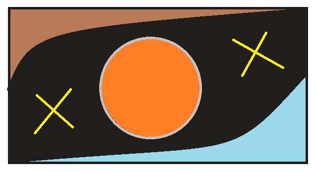
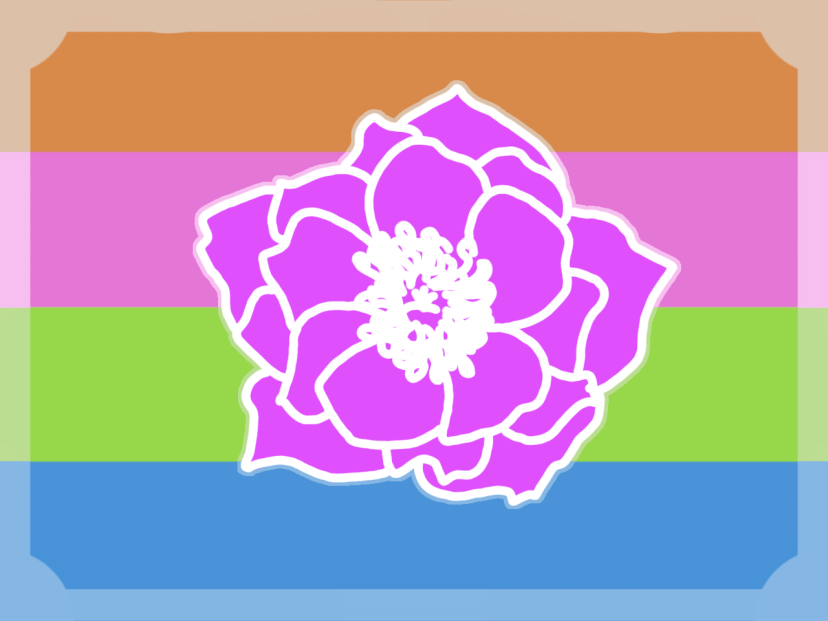
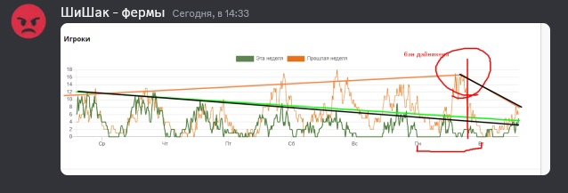

Эризм
Не путать с Эрия, Религиозный Эризм, Эризм НПО, Религиозный Лунизм, Сепультурская Секта
Эризм признан экстремистской идеологией
Задачей политтехнологов является выявление вредных эристских заблуждений и их развенчание.
Эризм¶
Эризм (от erine (эррландск.) - центральные люди (буквально) администрация, элита) - идеология, целью которой является сохранение контроля Администрации или правящей элиты над сервером, возвеличивание её, уравнивание интересов админ. состава (или элиты) с интересами сервера, создание и поддержка Эристских РП-Государств.
Эризм является довольно молодым термином, который объединяет целый спектр идей по общему признаку - максимальной поддержке диктата Администрации и Кланов. Эристы относятся к интересам Администрации, как к образующим сервер и считают их первичными. Помимо этого, эристы, зачастую, ставят на особый статус бытовое РП и Хард-РП, при условии, что в таком РП нет политических и социальных аспектов.
Эризм, несмотря на хорошее отношение к Хард-РП, противостоял РП-государству как политическому и социальному институту, считая необходимым контроль РП-Государства Администрацией.


Идеологически эризм разделен на несколько этапов: пре-эризм, классический эризм, лунизм. Каждый из них отличался степенью радикальности, но всегда наделял особыми свойствами РП-процессы и Администрацию, был субъективен и идеалистичен. Исторически эризму противостояли эррландские левые и сентябристы.
Пре-эризм¶
Пре-эризм появился еще на 1-й НЕ. Одной из главных организаций пре-эристов ранней НЕ являлся Культ Авиор, против которого левые, уже тогда, разворачивали борьбу. К ней можно отнести события 15-го Мая 2022 года. В этот день главой спавна и одним из создателей сервера - Авиорой - был выдвинут проект расширения границ спавна. Это было не принято игроками, вышедшими на митинг, на котором была создана КПЭ. Авиора, вскоре, была забанена по решению игроков за строительство спавна в творческом режиме. Впоследствии пре-эризм сконцентрировался в ПБКА-ПАРНАС. Пре-эризм характеризуется тем, что не считает РП-процесс образующим и не возвышает его, однако, пре-эристы считают культуру основой эррландского государства. Большинство пре-эристов выступали против использования творческого режима для развития РП. Пре-эристы являлись активными противниками КПЭ и её основного проекта - проекта национализации -, считая его губительным для сервера и РП-процессов. Пре-эризм был разбит во время Красного террора. Однако, некоторые деятели пре-эризма, такие как Яндере и Фелис, выступавшие против Латоника и пр., после создадут новое движение, которое погубит сервер.
Классический Эризм¶
Эризм являет собой сердцевину всех идеалистических и антиэррландских движений, существовавших на НЕ. Основными тезисами классического Эризма является: полный примат РП-институтов над производством и экономикой, наделение администрации абсолютной и неограниченной властью, использование всех методов (в том числе и творческого режима) для развития РП. Пиком эризма стал Мартовский съезд, на котором он сформировался как единая система.
Классический эризм опровергался Дайникеном и деятелями Эррландского коммунизма в статье "Администрация и революция", а его методы до сих пор считаются абсурдными. Во втором томе "Социализма", Дайникен пытался опровергнуть эризм, однако, тот стал де-факто государственной идеологией нового Эрийского Союза. В разговоре с Петроглифом, Дайникен и Рубрикс сказали, что серверу осталось полтора месяца. Спустя +- месяц, после начала проведения эрийской политики (14 марта), сервер был закрыт (19 апреля). Наделение администрации абсолютными полномочиями, разрушение экономики, "Лихая Весна" - все это вызвало отток игроков в СФГ или на другие сервера. Эризм, в головах членов СФГ, стал идеологией упадка - вредной, разрушительной и опасной.
Лунизм¶
Лунизм возник на 4НЕ как реакция на Эррландский красный национализм и расширение СФГЭ. Лунизм отступил от радикальных позиций по поводу администрации, однако в остальном остался тем-же эризмом. Администрацией было создано марионеточное РП-правительство в лице Лунной палаты, в большинстве состоящей из игроков - бывших членов Эрийского архива или граждан Сепультуры (Лунограда). Противниками лунизма стал Союз 1-го Сентября, состоящий из игроков, помнящих события Черного Марта. После Сентябристского Мятежа 21-го Августа и установления Лунной Диктатуры к концу Августа онлайн начал стремительно падать, что опять доказало несостоятельность эризма.

07.09.2023 большинство Сентябристов было разбанено, а на территории сервера развернулась масштабная компания антилунистского террора, но, несмотря на меры Революционного Правительства, ушедшие игроки не возвращались, а новые, из-за падения рейтинга сервера, не приходили. 19 октября, поле ухода Дайникена в отставку, был совершен Лунистский Переворот, положивший конец последнему Эррландскому серверу.
Астральский Эризм¶
Астральский эризм был ярко выражен тем, что Администрация использовала крупные ПВП и ПВЕ организации для контроля за РП-Государством. Любые реформы такого государства, если и проходили мимо крупных организаций, блокировались напрямую Админами, заседающими в Парламенте.
Помимо этого, через РП-Государство создавалась машина эристского террора в виде тюрем, пунктов заключения и усиления полиции.